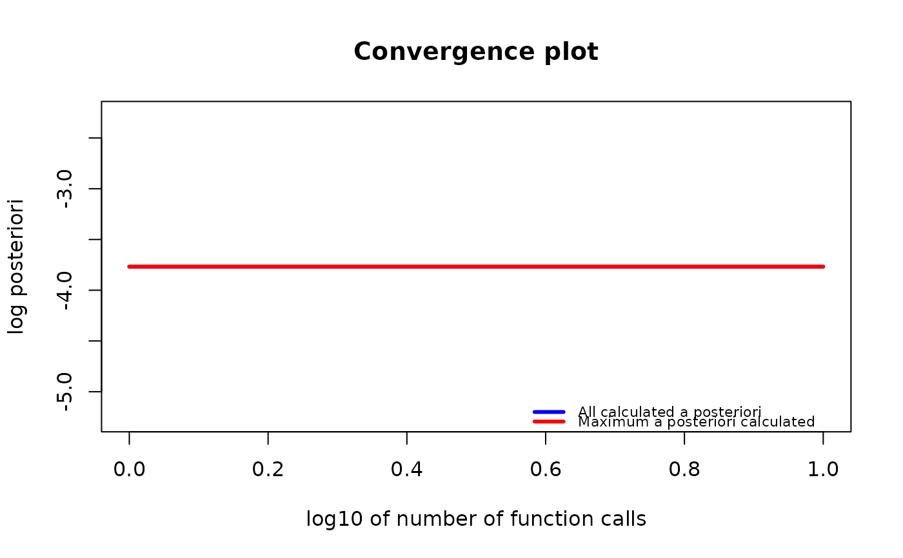

Create a gips object.
This object will consist of data and all other information needed to find
the most likely invariant permutation. The optimization itself
will not be performed. One must call the find_MAP()
function to do it. See examples below.
Usage
gips(
S,
number_of_observations,
delta = 3,
D_matrix = NULL,
was_mean_estimated = TRUE,
perm = ""
)
new_gips(
list_of_gips_perm,
S,
number_of_observations,
delta,
D_matrix,
was_mean_estimated,
optimization_info
)
validate_gips(g)Arguments
- S
A matrix; estimated covariance matrix. When Z is the observed data:
if one does not know the theoretical mean and has to estimate it with the observed mean, use
S = cov(Z), and set parameterwas_mean_estimated = FALSE.if one know the theoretical mean is 0, use
S = (t(Z) %*% Z) / number_of_observations, and set parameterwas_mean_estimated = FALSE;
- number_of_observations
A number of data points that
Sis based on.- delta
A hyper-parameter of a Bayesian model. Has to be bigger than 2.
- D_matrix
A hyper-parameter of a Bayesian model. Square matrix of the same size as
S. When NULL, the identity matrix is taken.- was_mean_estimated
A logical (TRUE or FALSE).
Set TRUE (default) when your
Sparameter is a result of astats::cov()function.Set FALSE when your
Sparameter is a result of a(t(Z) %*% Z) / number_of_observationscalculation.
- perm
An optional permutation to be the base for the
gipsobject. Can be of agips_permor apermutationclass, or anything the functionpermutations::permutation()can handle.- list_of_gips_perm
A list with a single element of a
gips_permclass. The base object for thegipsobject.- optimization_info
NULL or the list with information about the optimization process.
- g
Element to be checked if it is proper element of a
gipsclass.
Value
gips() returns an object of
a gips class after the safety checks.
new_gips() returns an object of
a gips class without the safety checks.
validate_gips() returns its argument unchanged.
If the argument is not a correct element of a gips class,
it produces an error.
Functions
new_gips(): Constructor. Only intended for low-level use.validate_gips(): Validator. Only intended for low-level use.
See also
stats::cov()- TheSparameter is most of the time an estimated covariance matrix, so a result of thecov()function. For more information, see Wikipedia - Estimation of covariance matrices.find_MAP()- The function that finds the Maximum A Posteriori (MAP) Estimator for a givengipsobject.gips_perm()- The constructor of agips_permclass. Thegips_permobject is used as the base object for thegipsobject. To be more precise, thegipsobject has a one-element list of agips_permobject as the base object.
Examples
require("MASS") # for mvrnorm()
perm_size <- 6
mu <- runif(6, -10, 10) # Assume we don't know the mean
sigma_matrix <- matrix(
data = c(
1.0, 0.8, 0.6, 0.4, 0.6, 0.8,
0.8, 1.0, 0.8, 0.6, 0.4, 0.6,
0.6, 0.8, 1.0, 0.8, 0.6, 0.4,
0.4, 0.6, 0.8, 1.0, 0.8, 0.6,
0.6, 0.4, 0.6, 0.8, 1.0, 0.8,
0.8, 0.6, 0.4, 0.6, 0.8, 1.0
),
nrow = perm_size, byrow = TRUE
) # sigma_matrix is a matrix invariant under permutation (1,2,3,4,5,6)
number_of_observations <- 13
Z <- MASS::mvrnorm(number_of_observations, mu = mu, Sigma = sigma_matrix)
S <- cov(Z) # Assume we have to estimate the mean
g <- gips(S, number_of_observations)
g_map <- find_MAP(g, max_iter = 10, show_progress_bar = FALSE, optimizer = "MH")
g_map
#> The permutation (2,5)(3,6) has log posteriori -5.53903324795464 which was found after 10 log_posteriori calculations.
summary(g_map)
#> The optimized `gips` object.
#>
#> Permutation:
#> (2,5)(3,6)
#>
#> Log_posteriori:
#> -5.539033
#>
#> Number of observations:
#> 13
#>
#> The mean in `S` matrix was estimated.
#> Therefore, one degree of freedom was lost.
#> There is 12 degrees of freedom left.
#>
#> n0:
#> 4
#>
#> Number of observations is bigger than n0 for this permutaion,
#> so the gips model based on the found permutation does exist.
#>
#> --------------------------------------------------------------------------------
#> Optimization algorithm:
#> Metropolis_Hastings
#>
#> Number of log_posteriori calls:
#> 10
#>
#> Optimization time:
#> 0.02492642 secs
#>
#> Acceptance rate:
#> 0.3
#>
#> Log_posteriori calls after the found permutation:
#> 1
if (require("graphics")) {
plot(g_map, type = "both", logarithmic_x = TRUE)
}
